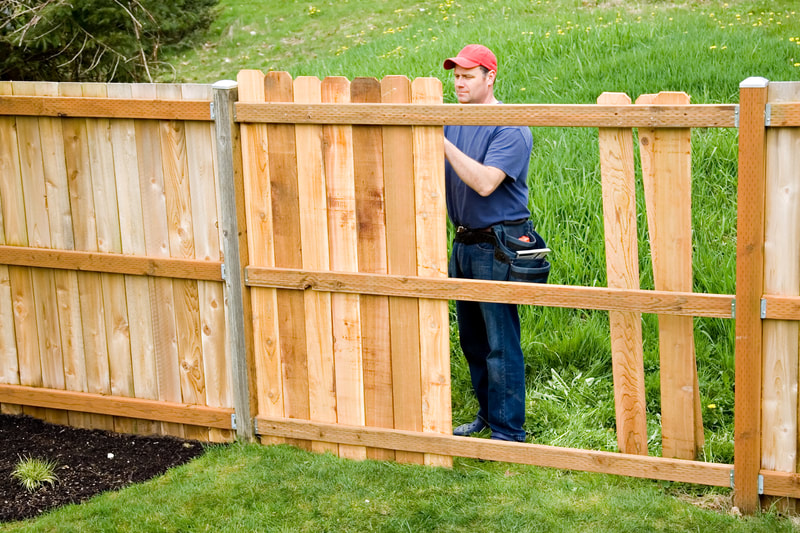
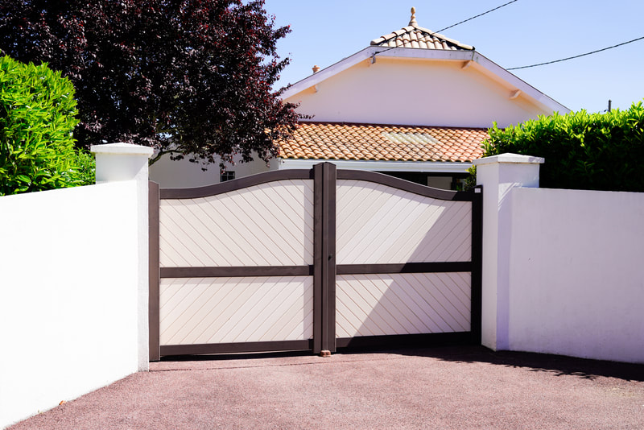

Posts
New posts mean digging in clay or rock. That is the expensive part of a repair.
Fence repair
Boards, mesh, rails, and gates replaced where the rest of the line is still sound. If the posts have failed, we say so instead of covering them up.


Call for a repair when a section leans, a gate drags, boards are missing, or a chain-link run has come loose. The usual cause in this area is rot at the ground line, a post that heaved in wet clay, or wind on a solid panel. A repair is the right spend when the posts still hold. It is the wrong spend when you would be nailing new boards to posts that will fall next winter.
After a wet winter, several posts in a clay yard can heave together. That is a rebuild of those holes, not a new board. If you want a full new line instead, the material pages cover wood, vinyl, and chain link.
We price the line on your lot. These are the pieces that move the number.
New posts mean digging in clay or rock. That is the expensive part of a repair.
A backyard with no gate wide enough for materials takes more time than a line off the driveway.
Odd board widths and discontinued vinyl colors can force a close match instead of an exact one.
One gate is a small visit. A whole side that leans is closer to a new fence.
A single gate or a few boards is a small job. Replacing several posts in clay is closer to a partial rebuild. We need to see how many posts have actually failed before we give a number.
Yes. We separate what the weather broke from what was already rotten. Broken boards on solid posts get replaced. Posts that pulled out of wet clay get reset or replaced. We will not nail a new panel to a loose post.
Yes. Loose fabric, a bent top rail, a failed gate, and a terminal post that has leaned are all repair work. If the whole run is rusted through, replacement is the honest recommendation.
Only when the posts are solid. If a screwdriver sinks into the post at the ground line, that post is done. New lumber on it will look fine until the next wet season, then it will lean again.
Often, yes. Replacing one bad corner and a gate costs less than a new line around the yard. We will tell you if the remaining posts are too far gone for that to make sense.